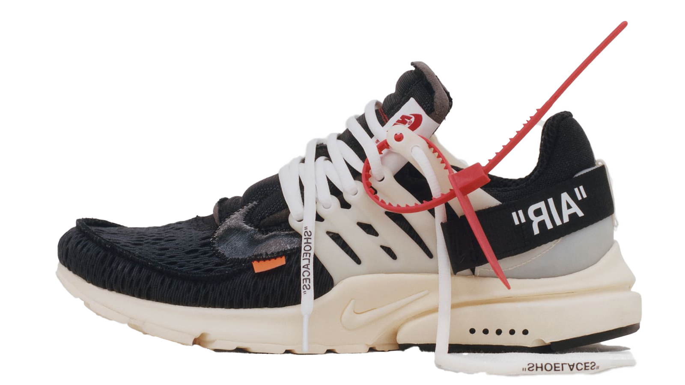

AIR PRESTO
THE NIKE AIR PRESTO WAS (AT THE TIME) ONE OF NIKE’S MOST ADVANCED RUNNING SHOES. THE SNEAKER, WHICH IS THE NEWEST ON THIS LIST, FEATURES A MESH UPPER, AIR SOLE UNIT INSIDE THE HEEL, AND MOULDED OVERLAY STRAPS ON THE MIDSOLE, UPPER, AND HEEL. THE AIR PRESTO WAS ALSO THE FIRST SHOE TO NOT USE NUMERIC SIZING. INSTEAD, IT WAS SIZED IN XXXS-XXXL. IT IS FEATURED IN A FEW NOTABLE COLLABORATIONS, THE BIGGEST BEING ITS MULTIPLE COLLABORATIONS WITH OFF-WHITE (PICTURED.)
INITIAL RELEASE: 2000
RELEASES: 63
COLORWAY: OFF-WHITE "THE TEN"
CURRENT RESALE PRICE: $3,650 (STOCK-X)